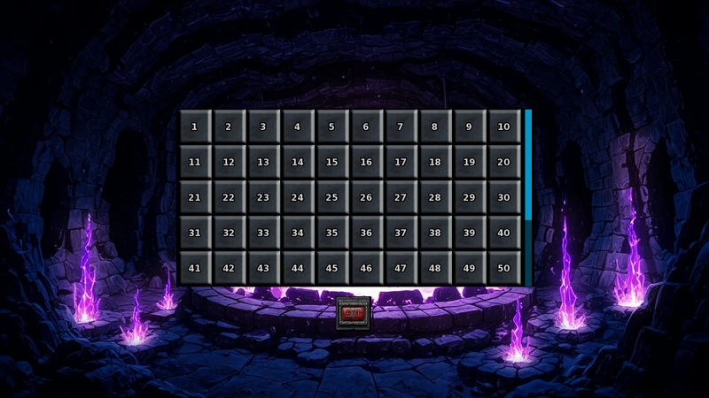

Player wiki noticeThis community-maintained page may contain gameplay, story, and mature-content spoilers.
概览
无穷敦煌 是从 Void室它的深度和到达的最高层与正常层分开。 古墓穴地牢。每层都收到一个新的随机布局、视觉主题和颜色符号。在无限范围内没有最后一层或额外的深度门。
模式强调可重复的战斗、战斗XP、专家点数、财富和巧妙的滴水。它不复制普通的地牢故事情景、固定迷你房、招募遭遇、赏金安置或秘密的墙壁通道。 敌人的外表并不包含最初遭遇的故事结果。无穷的杀戮并不代表战斗者团体的追求。

解锁和第一个条目
- 到达 普通地牢40层 击败 Nyxara 那边
- 返回地下 Catacombs 入口并选择 输入 Void 间。此入口需要解锁游戏这一部分的付费/更高电源访问。
- 在Void会议厅,选择 输入无限凹槽.
- 选择一个到达的无穷楼层。 起初, 采摘者会提议 1楼.
游戏在进入前自动保存. 正常的地牢深度不会给你等效的无限深度:清除正则的40层不会立即解锁无限的40层.
楼层进展、控制和保存
拾取器提供您最高深度从1到1的每层无穷。一旦列表超过可见的五行,则每行显示十个按钮并垂直滚动。使用 专访 按钮或退出以取消条目。
在地牢内部,请使用普通的地牢移动控制器或单击相邻的可走动的瓦片。您从右下方开始;下降的楼梯位于左上方。无限布局省略了正常的钥匙和锁住的楼梯门,所以到达楼梯就足以下降。
| 行动 | 结果 |
|---|---|
| 楼梯 | 前进一无限层,酌情记录新的最高深度,并产生新的布局/主题。 |
| 触发陷阱门 | 倒下一层无限层,并记录这个深度。陷阱必须经过它的激活卷。 |
| 向上楼梯,现在 | 向上移动一个深度,以1楼为最小,并产生新的布局. |
| 离开地牢 | 返回Void室。最高深度仍然存在;当前地图已丢弃。 |
| 重新进入到达的地板 | 产生新的地板,而不是恢复原有的布局. |
| 装入保存 | 在不恢复活动无穷运行的情况下恢复已保存的深度进度。再次选择条目 。 |
在无穷楼层之间没有普通的敦格昂小商场或支持者检查。 跑步新到达的深度成为重返的选择; 运行后保存 重新进入一个更安全的地板是正常的耕作方式,而不会更深入。
显示的无穷深度决定了战斗的缩放和数条奖励规则. 随机选择的视觉主题仍然控制着大部分地形及其普通检查;一个 mech 外观的无穷地底3不等于普通地牢地底43层.
敌方和交战规则
普通的行走瓷砖有一个 17%的随机作战检查。随机池包括常规的、血液的、水下的、和冰毒液体的敌人、四个无穷无尽的敌人,以及 17份可重复的老板副本。正常的敌方地板范围被忽略,因此一个危险的敌方或老板甚至可以在1楼出现,选择来自合并的条目,而不是每层敌方固定的百分比卷.
随机相遇会卷起新的敌人锡和0–3的修饰剂。 战斗背景也可能不同。 敌人锡或气不足以识别其原始底部、元素或弱点;使用其实际特征和攻击。
| 无限级 | 什么变化 |
|---|---|
| 普通黑帮 | 接收其滚动修改器数量的额外 HP 乘数。此类还包括四个独家敌人和 Mimic 。 |
| 经常老板 | 保留其本土的老板级战斗属性和级别奖金。不应用修改器-计数 HP 乘法 。 |
| 象头 | 包括可重复的主要上司副本。它同样避免了修饰-计数 HP 乘法,但仍可收到单个修饰效果 。 |
上司的分类,上司的单独掠夺标识,以及它的收敛倍数是相关但截然不同的规则。比如,对敌人来说,抢掠行为可以存在,而不给其他上司行为。 即时杀伤豁免、减少破坏、吸收、武力领域、技能和级别奖金对于个人敌人仍然很重要。
深度放大和战斗奖励
为了无限的深度 无敌人的有效战斗水平始于 2×北纬,然后添加自己的级别奖金。HP得到正常的水平增长和额外的无限倍数:
无穷功率乘数=1 + 0.1 × 地板(N + 5)
| 无穷深度 | 单个修饰器前的功率乘数 |
|---|---|
| 1–4 | ×1.0 |
| 5–9 | ×1.1 |
| 10–14 | ×1.2 |
| 40–44 | ×1.8 |
| 100–104 | ×3.0 |
该乘数适用于HP和基损害乘数。 额外 切换到有效水平增长;这不是整个难度曲线 。 视觉主题的普通深层 ×2/×3 敌人 HP 助推也不适用 。您选定的战斗难度在之后缩放 HP 。
对于比较精确 HP 的读者,请 E = 2N + 敌方级别奖金。在修改符和难度之前,游戏会依次缩短为整数: 基 HP ×(1 + 0.22E); 那样 ×(1+0.04(英−1)); 那样 *无穷功率乘数。然后,普通暴徒会收到下文所述的修饰-计数因数,然后大增自己的×1.5 HP步骤。
胜利奖励使用有效的战斗级别,而不仅仅是显示的楼层数字。 双标准战斗XP和金牌,然后应用 FightingXP 的调值计数奖金和任何敌方特定的XP 乘数. 角斗士带 在无穷奖金之前,金币仍会加上普通的+50% 的 格斗XP。金币保留了它的幸运卷。 胸部缩水金是下文描述的特殊例外。
当战斗奖项被评为专家行动时,无限起始数是: 1+ 1 随机数字从 1到 N。这乘以滚动的修饰-计数系数和任何敌人专家乘数;然后可以适用普通路径/排名规则。这并不能保证每次攻击,无论路径或行动如何,都得分。
敌人修改器
首个修饰器卷为35%。如果成功,第二卷为25%;如果成功,第三卷为20%。 无条件的分布是 :
| 滚动修饰器 | 机会 | 战斗XP和专家乘数 | 经常移动 HP 系数 |
|---|---|---|---|
| 0 | 65% | ×1 | ×1 |
| 1 | 26.25% | ×2 | ×2 |
| 2 | 7% | ×3 | ×3 |
| 3 | 1.75% | ×4 | ×4 |
与计数相关的HP因子适用于普通暴徒,而奖励乘数则适用于不同级别。 个人特征可以进一步改变战斗统计:
| 修改器 | 实际效果 |
|---|---|
| 小声 | 将基准躲避机会设为75%;从损害乘数中减去0.25,最低乘数为0.1。 |
| 大块头 | 在损坏乘数中加上×1.5HP和+0.5。 |
| Shadow | 将强度改为暗黑,弱化改为光明;增加暗黑吸收50%,+15个百分点躲避,和Umbral Lance. |
| 幽灵 | 增加+25个百分点的躲避,+30魔法阻力,+35个百分点的减损. |
| 查奥蒂 | 复制一个随机的非Chaotic 修饰者的机械效果来进行这场斗争。它没有为HP计数或奖励计数奖金增加另一个滚动修饰。 |
| 愤怒的气息 | 在损害乘数中加上+0.25。 |
| 疯狂的气息 | 在关键修饰者的机会奖金中加上+18个百分点,在固定奖金中加上随机+25-100。 |
| 神秘的气息 | 添加+50魔法阻力. |
| 飞行气息 | 增加+25个百分点的减损. |
| 冷静一下 | 35%的机会在HP行动后再生500–1500HP,然后困难缩放并封顶到最大HP。 使用能防止被动愈合的火。 |
这些是敌人本土统计数据的调整。 损失乘数是乘数的加法,而不是在所有其他影响之后最终打击的固定百分比增加。
通常的卷子不包括重复的修饰剂,不包括大块小块,最多允许一个气团修饰剂; Shadow 也占用了气族槽。Chaotic 的复制效果是单独选择的,可以创建普通卷不会选择的组合。“Dark aura”不是当前随机修改器池中的额外选项。
无穷无尽的敌人
| 敌人 | 主要威胁 | 区别奖励或规则 |
|---|---|---|
| AISLOP (英语) | 酸Spit,毒云,claw,和Crush;Poison 强度,轻弱;原生的10个魔法阻力和8%的损伤还原. | 使用普通的合格收藏投放池。 |
| 凤凰 | 火攻,再生,火力,冰弱;吸收火和一些光. | 胜利除了其他适用的卷子外,还授予了一只凤凰凤凰. |
| 宝藏戈布林 | 30%的内在躲避加上普通的躲避,15%的HP力场,以及高度的回避;轻弱. | 两个有保证的募捐奖,在盘点平衡前从六只怪物的投放中独立选择。没有使用普通的收集投放卷。还有8%的底盘。 |
| 金属石料 | 80 魔力阻力,减少50%的损伤,物理/Acid/Poison强力;闪电弱力;不能当场死亡. | ×10 战斗XP和×2 专家点;a 15% 基础收集-投放卷 替换通常的深度采集率。 |
独家敌人没有特定楼层的保证,他们的本土防御与随机滚动的调制器结合,因此即使是低深的金属斯林或宝藏哥布林也可能进行准备.
胸和缩影
仍然需要打开胸口 锁定,或足够 实力或能力 用于选定主题: 30+2×(主题级别-1)。胸口检查会读取你的基本强度/能力数据。无限不会消除这一要求。
成功开业后 30%的模仿伏击机会打开胸口的检查失败不会卷起一个缩影。胸口埋伏会为这场战斗随机的滚转修正器澄清问题;它仍然使用当前无限深度的战斗缩放。
Mimics有120个HP基底剖面,+6战斗级别奖金,体力和火力弱点,不能当场死亡并算作被迫逃跑的情况. 胜利时:
- 胸部被消耗 并支付其储存的宝藏数量: 50+25×主题级别+随机0~30金替换普通的战金。
- 在库存平衡之前,保证从6种怪物滴水类型获得1项奖励。
- 一个单独的 15%的奖金单, 由盗贼手套增加,可以授予 Leather,一个血球,一个龙胆, 或组件 。这个特定的奖金卷并不会获得固定奖金 。
- 一个单独的 5%的底盘 也能够成功。
陷阱和主题危害
11种标准陷阱类型使用 a 40%的启动机会这包括刺刺、蜘蛛、锯子、Audrey植物、熊、毒藤、捕虫门、毒气、流沙、冰块和熔岩。
对于一个触发的破坏性陷阱, 页:1 下面是从 0到 . 0到 . 实际无限深度. T级 是随机选择的主题级别。
| 标准陷阱 | 启动时的损坏或影响 |
|---|---|
| 弹片 | 10+2(T−1)+B |
| 蜘蛛侠 | 15+3(T−1)+B |
| 巴斯看见了 | 20+4(T-1)+B |
| Audrey 工厂 | 2×[15+3(T−1)]+B;清除厂砖. |
| 陷阱 | 18+3(T−1)+B;清除陷阱瓦. |
| Poison 藤 | 12+2(T−1)+B |
| Poison 气体 | 8个+B |
| 快递 | 12+B;同样损失10分钟,并应用饥饿时间. |
| 冰块补丁 | 4+B;如果活着,尝试随机方向滑动. |
| 岩浆 | 20+2T+B;火元素Talisman给予完全豁免. |
| 陷阱门 | 降一层,产生新鲜的地板。 |
这40%的规则并不涵盖每一个地形危险。 火灾、毒气和空气叠加是单独的运动效应:火灾需要5种健康,除非受到盾牌或火元素塔力斯曼的保护;毒气需要8种健康,除非受到盾牌的保护;空气需要10种健康,没有这些豁免。 近乎超新星可以消耗1–30个能源,而冰毒主题则保留其炮塔和机械规则。不要假设每个彩色危险瓦片都有60%的安全通过机会。
普通的细胞相互作用提前了时间和饥饿。它们通常的4分钟成本被时间布夫(Time buff)和Fleet Footed(Footed)所降低,而单个地形效应则会增加成本。 给通往楼梯的路径带来治疗、食物和用品。
逃离战场
在普通的无穷之战中, 18%的逃亡企图立即失败即使有Shadow步骤。如果初步检查通过,则Shadow步骤保证了正常的逃逸;否则通常的能力/对抗XP逃逸计算运行,包括Fleet Footed及其95%的上限。因此,82%是初步检查的上限,而不是每个人最后的逃逸机会。
强迫老板/不可解除的情况 3%的绝望逃生机会 。这包括 Mimics 和相关的强制敌人。计划赢得这些遭遇,而不是依赖重复的逃跑尝试。可重复的上司副本并非仅仅因为有史诗级标签而自动强制;实际上司/无法使用的旗帜决定这一规则。
收藏滴滴和深度率
6个储存的怪物滴是 Void- 触摸的方刚, 闪烁的心尺, 灵魂线, 吉尔德的心, 远方的眼, 和诱发性易变的Ichor它们在用品中与共同资源分开。
普通符合条件的收藏/资源滚动开始于 深度1% 1-5增加 每5个深度1个百分点,并盖 深度96的20%:
基本机会 = 分钟(20, 1 + 地板((N - 1) + 5))%
| 深度 | 普通基础收集机会 |
|---|---|
| 1–5 | 1% |
| 6–10 | 2% |
| 46–50 | 10% |
| 91–95 | 19% |
| 96+ | 20% |
这是一个从敌方合格候选人获得一个奖项的机会,而不是每个可能的项目的单独机会。一些敌人有重叠的候选人。 符合条件的资源家庭也可以添加。 皮革、海壳或组件 候选人名单。
以下的参考列表列出来自通过普通怪物滴绘图符合条件的活水池的敌人名称. Boss 覆盖,下面描述,优先于这些怪物绘图.
| 怪物掉下来 | 活水池中合格的敌人名字 |
|---|---|
| Void - 触摸的芳香 | Basilisk、Cerberus、Chimera、Demon、Demon Cyborg、Dire Bat、Eclipse Hound、执行者、巨鼠、Goblin、Grimfang、Hellhound、Huntsman、Kobold、Lycanthae Ravager、Maize、Manticore、Mech Orc、Mutant Goblin 保镖、开膛手、跟踪者、特罗尔、暴龙、Rex、吸血鬼、吸血鬼王、Werwolf、Werolf Boss、Wolf、Wolf |
| 闪烁的心力 | Basilisk, 蓝龙, 珊瑚果莱姆, Crystal Golem, 地球元素, 翡翠龙, 火元素, 鱼怪, Greatwyrm, Ice Maiden, Lamia, Lightning Sprite, Magma Elemental, Mech Alligator, Mech Minotaur, Mech Shark, Mech Skeleton, Mech Spider, Mech Walker, Medusa, Naga, Phoenix, Sea Serpent, Sharkman, The Tarrasque, Void 巨龙 |
| 灵魂线索 | 阿科莱特,布鲁特强盗,匪徒队长,匪徒流氓,班希,黑暗精灵,黑暗精灵战士,黑暗女祭司,多尔哥特,古尔,努尔玛吉,奥尔库斯,幻影队长,Shadow刺客,西伦,斯凯莱顿王,斯凯莱顿勇士,街头胡德莱姆,最高利奇,沼泽女巫,不死老大,不死神,吸血鬼主,Wraith,僵尸 |
| 吉尔德心 | Baba Yaga、Balrog、障碍哨兵、Bessie、巡回牧师、集体凯伦、宇宙骑士、翡翠龙、Goldman、Melanthe、凤凰城、凤凰城、反应堆典狱长、Scrap Gladiator、Singulary Horror、Skeleton King、Star Devourer、Succubus、Succubus Queen、Titan、吸血鬼主 |
| 远方眼 | AISLOP、Abyssal Leviathan、Android、Angler野兽、Basilisk、Cepharopod、Demogorgon、魔王、Gargoyle、Giant Octopus、Harpy、Kraken、Mech Drone、Mech Lich、Mech Squid、美杜莎、神经炎症、Null Mage、安全性Drone、Singulity Horror、Sniper Cyborg、Star Deveurer、Wraith |
| 诱发性Ichor | AISLOP, AOMING, BDHLK, Corrupted Dryad, Corrupted Nymph, drider, Elder Hydra, Fallen Seraph, Fleshbeast, Giant Mantis, Giant Spider, Gorger, Hobgoblin, Jelly, 杀手兔子, Mycelium Horror, Orc, 阶段蜘蛛, Phase Tarantula, Slime, Varghul Bloodfiend,金星老板,金星飞镖 |
皮革候选人包括Bessie、迪雷·巴特、霍布戈布林、米诺陶尔、特罗尔和沃尔夫。海壳候选人包括螃蟹、洛布斯特曼、默曼、皮兰哈和海盗。 机械敌人如Androids、Automatons、机器人、安全无人机和几只甲骨文可以提供组件。 资格并不能保证选择或击败本土敌人的防御。
Boss 收藏覆写和额外滚动
指定普通老板将普通的收集机会乘以 ×2; 指定的大老板使用 ×3,但上限为100%。他们的怪物候选人成为指定的下限。其他符合条件的资源候选人仍然可以共享该卷。
| 征聘候选人 | 老板在x2时的操作 | 老板在 ×3 的操作 |
|---|---|---|
| Void - 触摸的芳香 | 葛林芳,鼠王,吸血鬼老大,狼人老大 | 吸血鬼领主 |
| 闪烁的心力 | 奇梅拉,科博尔德老板,蒂亚马特 | 翡翠龙,克力士,凡尔登暴君 |
| 灵魂线索 | 不死头 | Baba Yaga, Dark Sylph, Nhalos, 空边, 幽灵队长, 斯凯莱顿王, 幽灵死神 |
| 吉尔德心 | 弥诺陶金,兽人老板,金星老板 | ARIA 代理典狱长 Aegiron 泰坦尼姆·布沃克 黑骑士 冠军 高德曼 墨奇西格坦克 Omnifex 最终大会 |
| 远方眼 | Broodmother, Mantis Boss, Vex the Shadow (英语). | Android Ninja, Cthulhu, 巨型八角星, Nihil,最后的缺失 |
| 诱发性Ichor | 斯利姆皇帝 戈布林老大 巨魔老大 | Balrog, Gorgeroot, 饥饿的布鲁姆, 变种的戈布林护身兵 |
这些机会乘数适用于贴金和手套奖金。这里的“大 ”是投注的重置类别;不要仅仅从艺术品大小推断出来。
还有 单独、一次性特别卷 对于被标记为无穷无尽的地牢老大的敌人,它的机会是: 无穷深度百分比,上限为100%。在库存平衡之前,它从六只怪物中选择一个。它没有使用有效的战斗级别,而是接收 无补丁、手套或×2/×3 老板乘数.
例如,一个在无穷楼40上遇到的有标记的老板,即使其有效战斗水平在80以上,也会得到40%的特别卷,在100楼或更深的楼下,该卷得到保证,这独立于普通的藏书卷和Voucher卷。老板的拷贝不会授予其最初的脚本搜索关键项目或故事奖励。
巢穴和盗贼手套
对于使用补丁的投放卷,一个修改器 将基本机会增加一倍。每个额外的修改符添加 5个百分点,最多3个修改器和卷盖:
| 滚动修饰器 | 从基本机会P调整的机会 |
|---|---|
| 0 | 页:1 |
| 1 | 页:1 |
| 2 | 2P+5个百分点 |
| 3 | 2P+10个百分点 |
对于普通的10% 的收藏卷来说,相应的概率是10% 、 20% 、 25% 和 30% 。 特殊标志博斯卷和Mimic的担保收藏奖并没有使用这一公式。 并不是每个补充商品卷都使用这一公式;阅读具体规则,而不是将其作为全球所有掠夺的翻番。
盗贼手套 添加 5个百分点 。如果您也拥有 幽灵石,每个石层增加另一个 0.1 百分比 给手套奖金的顺序是: 深度/定制基数 / 老板乘数,如果有的话 / 封面奖金 / 手套奖金,上限为100%。
手套加幽灵石还能够实现一个独立的胜利后大奖,其中 每颗幽灵石级0.002%,封顶为100%。 0.02%,而普通手套奖金是 6个百分点它从更广泛的可重复的地牢物品池中选择,并可以使用Luck Potion的重试。这两个幽灵效应的百分比不同。
遗书
以下的敌人有额外的独立 Vucher 卷。 列出的值是支持的 afix 和 Gloves 增加前的基数。 成功的 Vucher 卷并不能取代收藏或其他的滴数 。
| 敌人 | 基本担保机会 |
|---|---|
| 机器人 | 3% |
| 土匪布鲁特 | 2% |
| 土匪队长 | 4% |
| 盗贼流氓 | 2% |
| 黑暗精灵 | 1% |
| 戈布林语Name | 1% |
| 鬼头怪 | 4% |
| 高门 | 6% |
| 霍布戈布林语Name | 2% |
| 缩写 | 5% |
| 海盗 | 2% |
| 安保无人机 | 2% |
| Shadow 刺客 | 2% |
| 街头流氓 | 1% |
| 宝藏戈布林 | 8% |
清单平衡和使用泊位
无限奖励平衡一组 八份清单6个怪物掉下去 宝石和皮革。在授予该组的选定项目之前,游戏将其现有的计数与所有8个项目的平均值进行比较。
如果选中的项目是 绝对高于平均水平的125%,奖励被重新用于随机选择 三个库存最少的项目。绑定是随机的。平等保留原授奖。平衡检查使用预授奖数。
这可以将老板预期的方块、Mimic奖、或有保证的宝藏果卜林奖改造成另一种怪物滴Gem , 或皮革。每个奖项都要单独检查,因此首个宝藏果卜林奖可以影响第二个奖项。 战斗信息将实际授予的项目命名。 组件、海贝壳、奖券、鲜血兽和凤凰凤凰座位于这一平衡组之外。
这些资源的有用目的地包括:
- Theneas 灵魂石头升级: 多次筹集自有 灵魂石 乘+1,每次购买三次指定的怪物投放一次。菜单显示每个石头的确切组合。
- 那个 福尔吉: Gemmed 设备级在Gems和ingot同时消耗指定的怪物滴.
- 指定无限滴滴的手工艺品和其他 项目配方.
- 垦湾 当您有意想要将所列资源转换时,回收。
花费过多的项目可能会改变后来的奖励。因此,养活某个特定的敌人是影响其候选人名单的一种方式,而不是对最终项目的承诺。
实际准备和解决问题
| 情况 | 解释或办法 |
|---|---|
| 1楼出现主要敌人 | 正常的敌方地面范围被忽略了,即使浅水耕作也要带各种作战装备。 |
| 暴徒的HP比预期的要多得多 | 检查滚动修改符:三在大和困难之前给正规的暴徒 ×4 HP 。 老板使用不同的计数规则 。 |
| 敌人躲避或吸收你最喜欢的攻击 | 请检查date=中的日期值 (帮助) Tiny, Shadow, 土生土长的躲避和元素优势. Metal Slime and Treasure Goblin 需要特别关注. |
| Shadow 步骤失败 | Infinity有初步的18%的失败卷,强制格斗使用3%的规则. |
| 尽管有高的避险数据,陷阱还是会痛的 | 11个标准陷阱类型使用固定激活规则. Terrain 覆盖是单独的危险. |
| 胸口无法打开 | 达到基于主题的强/能力阈值或学习锁定选择. |
| 搜索楼梯密钥 | Infinity 生成的楼梯访问不需要普通的密钥/门谜. |
| 和上市的老板候选人不同 | 库存平衡可以重新定向,资源候选人可以分享普通卷。 |
| 没有剧本老板奖杯和招聘 | 无穷使用可重复的战斗副本;追求相关的普通地牢或故事遭遇. |
| 回来前一层看起来不一样 | 重新生成布局、主题和符号。加载不会恢复活动运行 。 |
使用舒适的到达的地面进行耕作;在你的疗伤、元素覆盖和防御支持下,推深。 更深的地面既增加了奖励机会,也增加了有效的敌方水平和陷阱损害。 平整幽灵石和留住盗贼手套可以改善抢掠的卷子,而既不能消除战斗危险,也不能保证具体的平衡奖。
相关指南
Overview
Infinity Dungeons is the endless combat mode entered from the Void Chamber. Its depth and highest reached floor are separate from the regular Ancient Catacombs dungeon. Every floor receives a new random layout, visual theme, and color tint. There is no final floor or additional depth gate inside Infinity.
The mode emphasizes repeatable combat, Fighting XP, specialist points, Wealth, and crafting drops. It does not reproduce normal dungeon story scenarios, fixed miniboss rooms, recruitment encounters, bounty placements, or secret wall passages. Enemy appearances do not carry the original encounter’s story outcome. Infinity kills do not count toward Fighters Guild quests.
Unlock and First Entry
- Reach Floor 40 of the regular dungeon and defeat Nyxara there.
- Return to the Underground Catacombs entrance and choose Enter the Void Chamber. This entrance requires the paid/Higher Power access that unlocks this part of the game.
- In the Void Chamber, choose Enter the Infinity Dungeons.
- Select a reached Infinity floor. Initially the picker offers Floor 1.
The game autosaves before entry. Normal dungeon depth does not give you equivalent Infinity depth: clearing regular Floor 40 does not immediately unlock Infinity Floor 40.
Floor Progression, Controls, and Saving
The picker offers every Infinity floor from 1 through your highest reached depth. It shows ten buttons per row and scrolls vertically once the list exceeds the visible five rows. Use the EXIT button or Escape to cancel entry.
Inside the dungeon, use the normal dungeon movement controls or click an adjacent walkable tile. You begin near the bottom right; the descending stairs are at the top left. The Infinity layout omits the normal key and locked stair door, so reaching the stairs is enough to descend.
| Action | Result |
|---|---|
| Descend stairs | Advance one Infinity floor, record a new highest depth if appropriate, and generate a fresh layout/theme. |
| Trigger a trapdoor | Fall one Infinity floor and also record that depth. The trap must pass its activation roll. |
| Use upward stairs, where present | Move up one depth, with Floor 1 as the minimum, and generate a new layout. |
| Leave the dungeon | Return to the Void Chamber. Highest reached depth remains; the current map is discarded. |
| Re-enter a reached floor | Generate a fresh floor, rather than resume its old layout. |
| Load a save | Restore saved depth progress without resuming an active Infinity run. Choose entry again. |
There are no normal-dungeon miniboss or supporter checks between Infinity floors. A run’s newly reached depth becomes a re-entry choice; save after your run to keep that progression in your saved game. Re-entering a safer floor is a valid way to farm without pushing deeper.
The shown Infinity depth determines combat scaling and several reward rules. The randomly selected visual theme still controls much of the terrain and its ordinary checks; a mech-looking Infinity Floor 3 is not equivalent to regular dungeon Floor 43.
Enemies and Encounter Rules
Ordinary walking tiles have a 17% random battle check per move. The random pool includes regular, blood, underwater, and mech-liquid enemies, four Infinity-exclusive enemies, and 17 repeatable boss copies. Normal enemy floor ranges are ignored, so a dangerous enemy or boss can appear even on Floor 1. Selection is from the combined entries, not a fixed percentage roll for each enemy tier.
Random encounters roll a new enemy tint and 0–3 modifiers. Combat backgrounds can also vary. An enemy’s tint or aura is not enough to identify its original floor, element, or weakness; use its actual traits and attacks.
| Infinity tier | What changes |
|---|---|
| Regular mob | Receives the extra HP multiplier for its number of rolled modifiers. This category also includes the four exclusive enemies and Mimics. |
| Regular boss | Retains its native boss-class combat properties and level bonus. Modifier-count HP multiplication is not applied. |
| Epic boss | Includes the repeatable major boss copies. It likewise avoids the modifier-count HP multiplication, but may still receive individual modifier effects. |
Boss classification, a boss’s separate loot marking, and its collection-drop multiplier are related but distinct rules. For example, a loot override can exist for an enemy without giving it every other boss behavior. Instant-kill immunity, damage reduction, absorption, force fields, skills, and level bonuses remain important on individual enemies.
Depth Scaling and Combat Rewards
For an Infinity depth N, the enemy’s effective combat level begins at 2 × N, then adds its own level bonus. HP receives the normal level-based growth and an additional Infinity multiplier:
Infinity power multiplier = 1 + 0.1 × floor(N ÷ 5)
| Infinity depth | Power multiplier before individual modifiers |
|---|---|
| 1–4 | ×1.0 |
| 5–9 | ×1.1 |
| 10–14 | ×1.2 |
| 40–44 | ×1.8 |
| 100–104 | ×3.0 |
This multiplier applies to HP and the base damage multiplier. It is additional to effective-level growth; it is not the whole difficulty curve. The visual theme’s normal deep-floor ×2/×3 enemy HP boosts do not also apply. Your selected combat difficulty scales the resulting HP afterward.
For readers comparing exact HP, let E = 2N + enemy level bonus. Before modifiers and difficulty, the game successively truncates to whole numbers after: base HP × (1 + 0.22E); then × (1 + 0.04(E − 1)); then × the Infinity power multiplier. Regular mobs then receive the modifier-count factor described below, and Huge adds its own ×1.5 HP step.
Victory rewards use the effective combat level, not merely the floor’s displayed number. Infinity doubles standard Fighting XP and gold, then applies Fighting XP’s modifier-count bonus and any enemy-specific XP multiplier. Gladiator Belt still adds its ordinary +50% Fighting XP before those Infinity bonuses. Gold retains its Luck roll. A chest Mimic’s gold is a special exception described below.
When combat awards points for a specialist action, the Infinity starting amount is 1 + a random number from 1 to N. This is multiplied by the rolled modifier-count factor and any enemy specialist multiplier; the ordinary path/rank rules can then apply. This is not a guarantee of that many points for every attack, regardless of path or action.
Enemy Modifiers
The first modifier rolls at 35%. If that succeeds, a second rolls at 25%; if the second succeeds, a third rolls at 20%. The unconditional distribution is:
| Rolled modifiers | Chance | Fighting XP and specialist multiplier | Regular-mob HP factor |
|---|---|---|---|
| 0 | 65% | ×1 | ×1 |
| 1 | 26.25% | ×2 | ×2 |
| 2 | 7% | ×3 | ×3 |
| 3 | 1.75% | ×4 | ×4 |
The count-related HP factor applies to regular mobs, while the reward multiplier applies across tiers. Individual traits can further change combat stats:
| Modifier | Actual effect |
|---|---|
| Tiny | Sets base dodge chance to 75%; subtracts 0.25 from the damage multiplier, with a minimum multiplier of 0.1. |
| Huge | Adds ×1.5 HP and +0.5 to the damage multiplier. |
| Shadow | Changes strength to Dark and weakness to Light; adds 50% Dark absorption, +15 percentage points of dodge, and Umbral Lance. |
| Ghostly | Adds +25 percentage points of dodge, +30 magic resistance, and +35 percentage points of damage reduction. |
| Chaotic | Copies one random non-Chaotic modifier’s mechanical effects for that fight. It does not add another rolled modifier for HP-count or reward-count bonuses. |
| Angry aura | Adds +0.25 to the damage multiplier. |
| Crazy aura | Adds +18 percentage points to the critical modifier’s chance bonus and a random +25–100 to its flat bonus. |
| Mystical aura | Adds +50 magic resistance. |
| Fierce aura | Adds +25 percentage points of damage reduction. |
| Calm aura | 35% chance to regenerate 500–1,500 HP after its action, before difficulty scaling and capped at maximum HP. Using Fire that turn prevents the passive healing. |
These are adjustments to the enemy’s native stats. Damage multipliers are additions to the multiplier, not a fixed percentage increase to the final hit after all other effects.
The normal roll excludes duplicate modifiers, excludes Tiny with Huge, and permits at most one aura-group modifier; Shadow also occupies that aura-group slot. Chaotic’s copied effect is selected separately and can create combinations that the ordinary roll would not choose. “Dark aura” is not an extra option in the current random modifier pool.
Infinity-Exclusive Enemies
| Enemy | Main threats | Distinct reward or rule |
|---|---|---|
| AISlop | Acid Spit, Toxic Cloud, Claw, and Crush; Poison strength, Light weakness; native 10 magic resistance and 8% damage reduction. | Uses the ordinary eligible collection-drop pool. |
| Phoenix | Fire attacks, regeneration, Fire strength, Ice weakness; absorbs Fire and some Light. | Victory grants one Phoenix Feather, in addition to applicable other rolls. |
| Treasure Goblin | 30% innate dodge plus its ordinary dodge, a 15%-HP force field, and high evasiveness; Light weakness. | Two guaranteed collection awards, each independently selected from the six monster drops before inventory balancing. Uses no ordinary collection-drop roll. Also has an 8% base Voucher roll. |
| Metal Slime | 80 magic resistance, 50% damage reduction, Physical/Acid/Poison strengths; Lightning weakness; cannot be instantly killed. | ×10 Fighting XP and ×2 specialist points; a 15% base collection-drop roll replaces the usual depth-based collection rate. |
The exclusive enemies are not guaranteed by a particular floor. Their native defenses combine with randomly rolled modifiers, so even a low-depth Metal Slime or Treasure Goblin may take preparation.
Chests and Mimics
Opening a chest still requires Lockpicking, or enough Strength or Ability for the selected theme: 30 + 2 × (theme level − 1). The chest check reads your underlying Strength/Ability stats. Infinity does not remove that requirement.
After a successful opening, there is a 30% Mimic ambush chance. A failed chest-opening check does not roll a Mimic. The chest ambush clears randomly rolled modifiers for this fight; it still uses the current Infinity depth’s combat scaling.
Mimics have a 120 base HP profile, a +6 combat level bonus, Physical strength and Fire weakness. They cannot be instantly killed and count as a forced escape situation. On victory:
- The chest is consumed and pays its stored treasure amount: 50 + 25 × theme level + random 0–30 gold, replacing ordinary battle gold.
- One award from the six monster-drop types is guaranteed before inventory balancing.
- A separate 15% bonus-item roll, increased by Thieves Gloves, can award Leather, a Blood Orb, a Dragon Coin, or Components. This particular bonus roll does not receive the affix bonus.
- A separate 5% base Voucher roll can also succeed.
Traps and Theme Hazards
Eleven standard trap types use a flat 40% activation chance, regardless of the ordinary avoidance stats. On failure, the trap misfires. This covers spikes, spiders, saws, Audrey plants, beartraps, poison vines, trapdoors, poison gas, quicksand, ice patches, and lava.
For a triggered damaging trap, B below is a fresh random integer from 0 through the actual Infinity depth. T is the randomly selected theme level.
| Standard trap | Damage or effect when activated |
|---|---|
| Spikes | 10 + 2(T − 1) + B |
| Spider | 15 + 3(T − 1) + B |
| Buzz saw | 20 + 4(T − 1) + B |
| Audrey plant | 2 × [15 + 3(T − 1)] + B; clears the plant tile. |
| Beartrap | 18 + 3(T − 1) + B; clears the trap tile. |
| Poison vine | 12 + 2(T − 1) + B |
| Poison gas | 8 + B |
| Quicksand | 12 + B; also loses 10 minutes and applies hunger for that time. |
| Ice patch | 4 + B; if alive, attempts a random-direction slip. |
| Lava | 20 + 2T + B; Fire Elemental Talisman grants full immunity. |
| Trapdoor | Descends one floor and generates a fresh floor. |
That 40% rule does not cover every terrain hazard. Fire, poison, and void-gas overlays are separate movement effects: fire costs 5 Health unless protected by Shield or Fire Elemental Talisman; poison costs 8 Health unless protected by Shield; void gas costs 10 Health without those exemptions. Nearby supernovas can drain 1–30 Energy, and mech themes retain their turret and machinery rules. Do not assume every colored hazardous tile has a 60% safe pass chance.
Ordinary cell interactions advance time and hunger. Their usual 4-minute cost is reduced by the Time buff and Fleet Footed, while individual terrain effects can add costs. Bring healing, food, and supplies for the route to the stairs.
Escaping Battles
In ordinary Infinity fights, 18% of flee attempts fail immediately, even with Shadow Step. If that preliminary check passes, Shadow Step guarantees that ordinary escape; otherwise the usual Ability/Fighting XP flee calculation runs, including Fleet Footed and its 95% cap. Thus 82% is a ceiling from the preliminary check, not everybody’s final escape chance.
Forced boss/unfleeable situations retain a 3% desperate escape chance in Infinity. This includes Mimics and relevant forced enemies. Plan to win those encounters rather than rely on repeated escape attempts. A repeatable boss copy is not automatically forced solely because it has an epic-tier label; the actual boss/unfleeable flags determine this rule.
Collection Drops and Depth Rates
The six stored monster drops are Void-Touched Fang, Shimmering Heartscale, Soul Thread, Gilded Heart, Abyssal Eye, and Mutagenic Ichor. They appear in Supplies separately from common resources.
The ordinary eligible collection/resource roll starts at 1% on depths 1–5, increases by one percentage point every five depths, and caps at 20% from depth 96 onward:
Base chance = min(20, 1 + floor((N − 1) ÷ 5)) percent
| Depth | Ordinary base collection chance |
|---|---|
| 1–5 | 1% |
| 6–10 | 2% |
| 46–50 | 10% |
| 91–95 | 19% |
| 96+ | 20% |
This is one chance to receive one award from that enemy’s eligible candidates, not a separate chance for each possible item. Some enemies have overlapping candidates. Eligible resource families can also add Leather, Sea Shells, or Components to that same candidate list.
The following reference lists named enemies from the live pools that are eligible through the ordinary monster-drop mappings. Boss overrides, described next, take precedence over these monster mappings.
| Monster drop | Eligible enemy names in the live pools |
|---|---|
| Void-Touched Fang | Basilisk, Cerberus, Chimera, Demon, Demon Cyborg, Dire Bat, Eclipse Hound, Enforcer, Giant Rat, Goblin, Grimfang, Hellhound, Huntsman, Kobold, Lycanthae Ravager, Maize, Manticore, Mech Orc, Mutant Goblin Bodyguard, Ripper, Stalker, Troll, Tyrannosaurus Rex, Vampire, Vampire King, Werewolf, Werewolf Boss, Wolf |
| Shimmering Heartscale | Basilisk, Blue Dragon, Coral Golem, Crystal Golem, Earth Elemental, Emerald Dragon, Fire Elemental, Fish Monster, Greatwyrm, Ice Maiden, Lamia, Lightning Sprite, Magma Elemental, Mech Alligator, Mech Minotaur, Mech Shark, Mech Skeleton, Mech Spider, Mech Walker, Medusa, Naga, Phoenix, Sea Serpent, Sharkman, The Tarrasque, Void Giant |
| Soul Thread | Acolyte, Bandit Brute, Bandit Captain, Bandit Rogue, Banshee, Dark Elf, Dark Elf Warrior, Dark Priestess, Daurgothoth, Ghoul, Null Mage, Orcus, Phantom Captain, Shadow Assassin, Siren, Skeleton King, Skeleton Warrior, Street Hoodlum, Supreme Lich, Swamp Witch, Undead Boss, Undead Horde, Vampire Lord, Wraith, Zombie |
| Gilded Heart | Baba Yaga, Balrog, Barrier Sentinel, Bessie, Circuit Priest, Collective Karen, Cosmic Knight, Emerald Dragon, Goldman, Melanthe, Phoenix, Primordial Phoenix, Reactor Warden, Scrap Gladiator, Singularity Horror, Skeleton King, Star Devourer, Succubus, Succubus Queen, Titan, Vampire Lord |
| Abyssal Eye | AISlop, Abyssal Leviathan, Android, Angler Beast, Basilisk, Cephalopod, Demogorgon, Demon Lord, Gargoyle, Giant Octopus, Harpy, Kraken, Mech Drone, Mech Lich, Mech Squid, Medusa, Neural Inhibitor, Null Mage, Security Drone, Singularity Horror, Sniper Cyborg, Star Devourer, Wraith |
| Mutagenic Ichor | AISlop, Abomination, Bloodworm, Bog Hulk, Corrupted Dryad, Corrupted Nymph, Drider, Elder Hydra, Fallen Seraph, Fleshbeast, Giant Mantis, Giant Spider, Gorger, Hobgoblin, Jelly, Killer Bunny, Mycelium Horror, Orc, Phase Spider, Phase Tarantula, Slime, Varghul Bloodfiend, Venus Boss, Venus Flytrap |
Leather candidates include Bessie, Dire Bat, Hobgoblin, Minotaur, Troll, and Wolf. Sea Shell candidates include Crab, Lobsterman, Merman, Piranha, and Pirate. Mechanical enemies such as Androids, Automatons, Robots, Security Drones, and several golems can supply Components. Eligibility does not guarantee selection or defeat a native enemy’s defenses.
Boss Collection Overrides and Extra Roll
Designated regular bosses multiply the ordinary collection chance by ×2; designated big bosses use ×3, with a 100% cap. Their monster candidate becomes the specified drop. Other eligible resource candidates can still share that roll.
| Collection candidate | Boss overrides at ×2 | Boss overrides at ×3 |
|---|---|---|
| Void-Touched Fang | Grimfang, Rat King, Vampire Boss, Werewolf Boss | Vampire Lord |
| Shimmering Heartscale | Chimera, Kobold Boss, Tiamat | Emerald Dragon, Krax the Verdant Tyrant |
| Soul Thread | Undead Boss | Baba Yaga, Dark Sylph, Nhalos, the Empty Edge, Phantom Captain, Skeleton King, The Grim Reaper |
| Gilded Heart | Minotaur King, Orc Boss, Venus Boss | ARIA Proxy Warden, Aegiron, the Titanium Bulwark, Black Knight, Champion, Goldman, Mech Siege Tank, Omnifex, the Final Assembly |
| Abyssal Eye | Broodmother, Mantis Boss, Vex the Shadow | Android Ninja, Cthulhu, Giant Octopus, Nihil, the Last Absence |
| Mutagenic Ichor | Emperor Slime, Goblin Boss, Troll Boss | Balrog, Gorgeroot, the Starved Bloom, Mutant Goblin Bodyguard |
These chance multipliers apply before affix and Gloves bonuses. “Big” here is the drop override’s category; do not infer it solely from artwork size.
There is also a separate, once-per-victory special roll for enemies marked as dungeon bosses in Infinity. Its chance is the actual encounter Infinity depth as a percentage, capped at 100%. It selects one of the six monster drops before inventory balancing. It does not use effective combat level, and receives no affix, Gloves, or ×2/×3 boss multiplier.
For example, a marked boss encountered on Infinity Floor 40 gets a 40% special roll even if its effective combat level is above 80. At Floor 100 or deeper that roll is guaranteed. This is independent of its ordinary collection roll and Voucher roll. The boss copy does not award its original scripted quest key item or story reward.
Affix Loot Bonuses and Thieves Gloves
For drop rolls that use the affix bonus, one modifier doubles the base chance. Each additional modifier adds 5 percentage points, up to three modifiers and the roll’s cap:
| Rolled modifiers | Adjusted chance from a base chance P |
|---|---|
| 0 | P |
| 1 | 2P |
| 2 | 2P + 5 percentage points |
| 3 | 2P + 10 percentage points |
For an ordinary 10% collection roll, the respective chances are 10%, 20%, 25%, and 30%. The special marked-boss roll and Mimic’s guaranteed collection award do not use this formula. Not every supplementary commodity roll uses it either; read the specific rule rather than treating it as a global doubling of all loot.
Thieves Gloves add 5 percentage points to supported drop rolls. If you also own Phantom Stone, each stone level adds another 0.1 percentage point to that Gloves bonus. The order for the ordinary collection roll is: depth/custom base → boss multiplier, if any → affix bonus → Gloves bonus, capped at 100%.
Gloves plus Phantom Stone also enable an independent post-victory jackpot, with 0.002% per Phantom Stone level, capped at 100%. At stone Level 10, that separate jackpot is 0.02%, while the ordinary Gloves bonus is 6 percentage points. It chooses from its broader repeatable dungeon item pool and can use Luck Potion’s retry. These two Phantom effects are different percentages.
Voucher Drops
The following enemies have an additional independent Voucher roll. The listed values are base chances before supported affix and Gloves increases. A successful Voucher roll does not replace collection or other drops.
| Enemy | Base Voucher chance |
|---|---|
| Android | 3% |
| Bandit Brute | 2% |
| Bandit Captain | 4% |
| Bandit Rogue | 2% |
| Dark Elf | 1% |
| Goblin | 1% |
| Goblin Boss | 4% |
| Goldman | 6% |
| Hobgoblin | 2% |
| Mimic | 5% |
| Pirate | 2% |
| Security Drone | 2% |
| Shadow Assassin | 2% |
| Street Hoodlum | 1% |
| Treasure Goblin | 8% |
Inventory Balancing and Using the Loot
Infinity rewards balance a group of eight inventories: the six monster drops plus Gems and Leather. Before awarding a selected item in that group, the game compares its existing count with the average across all eight.
If that selected item is strictly above 125% of the average, the reward is redirected to a random choice among the three least-stocked items. Ties are randomized. Equality keeps the original award. The balance check uses pre-award counts.
This can redirect a boss’s expected Fang, a Mimic reward, or a guaranteed Treasure Goblin award into another monster drop, Gem, or Leather. Each award is checked separately, so the first Treasure Goblin award can influence the second. The battle message names the actual awarded item. Components, Sea Shells, Vouchers, Blood Orbs, and Phoenix Feathers are outside this balancing group.
Useful destinations for these resources include:
- Theneas’s Soul Stone Upgrade: repeatedly raise an owned Soul Stone by +1, paying one each of three specified monster drops per purchase. The menu shows each stone’s exact combination.
- The Forge: Gemmed equipment tiers consume their designated monster drop alongside Gems and ingots.
- Craftable gifts that specify Infinity drops, and other item recipes.
- Reclamation Bay recycling when you intentionally want the listed resource conversion.
Spending an overstocked item can change which later awards are redirected. Farming a particular enemy is therefore a way to influence its candidate roll, rather than a promise of that exact final item.
Practical Preparation and Troubleshooting
| Situation | Explanation or approach |
|---|---|
| A major enemy appears on Floor 1 | Normal enemy floor ranges are ignored. Bring a varied combat kit even for shallow farming. |
| A mob has far more HP than expected | Check rolled modifiers: three give regular mobs ×4 HP before Huge and difficulty. Bosses use a different count rule. |
| Enemy dodges or absorbs your favorite attack | Check Tiny, Shadow, native dodge, and elemental strengths. Metal Slime and Treasure Goblin need particular attention. |
| Shadow Step fails | Infinity has a preliminary 18% failure roll, and forced fights use the 3% rule. |
| A trap hurts despite high avoidance stats | The eleven standard trap types use the fixed activation rule. Terrain overlays are separate hazards. |
| Chest cannot be opened | Meet its theme-based Strength/Ability threshold or learn Lockpicking. |
| Searching for a stair key | Infinity’s generated stair access does not require the normal key/door puzzle. |
| A drop differs from the listed boss candidate | Inventory balancing can redirect it, and resource candidates can share the ordinary roll. |
| No scripted boss trophy or recruitment | Infinity uses repeatable combat copies; pursue the relevant normal dungeon or story encounter. |
| A previous floor looks different on return | Layouts, themes, and tints are regenerated. Loading does not resume an active run. |
Use a comfortable reached floor for farming; push depth when your healing, elemental coverage, and defenses support it. Deeper floors increase reward opportunities but also effective enemy level and trap damage. Leveling Phantom Stone and retaining Thieves Gloves improves loot rolls, while neither removes combat danger or guarantees a specific balanced award.
Related Guides
Text adapted from the community-maintained Chronoromancer Wiki under CC BY-SA 4.0.